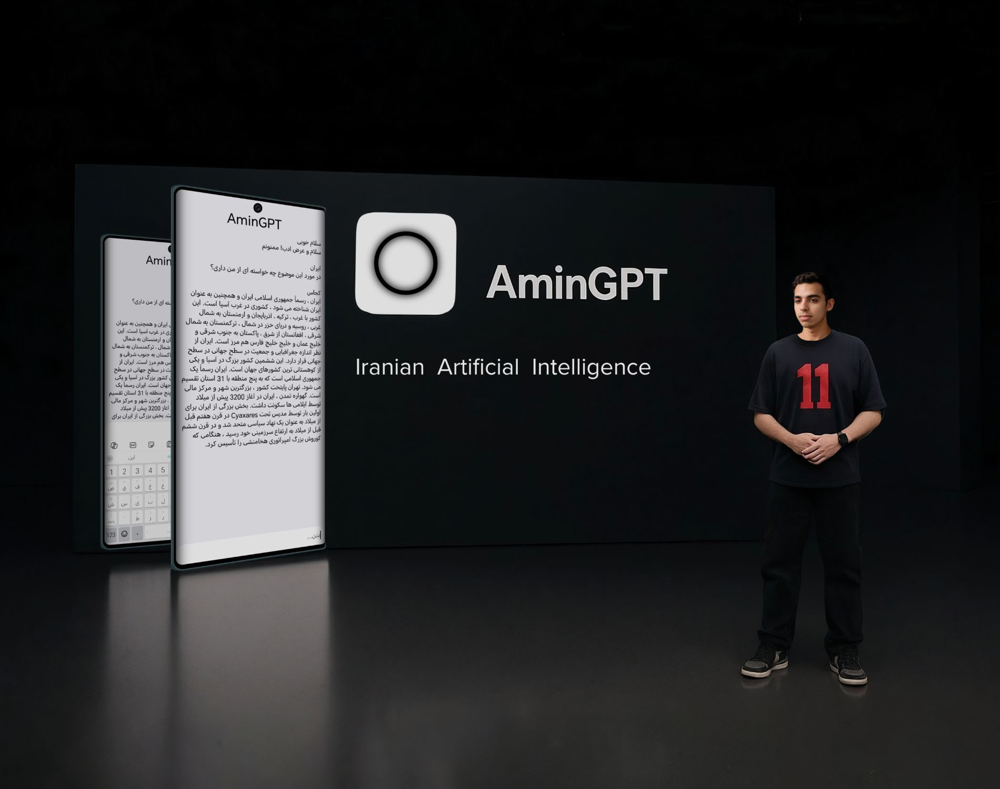

محمد امین مرادی، متولد ۱۳۸۳ در کرمانشاه، طراح گرافیک، نقاش، برنامهنویس، بازیساز و توسعهدهنده نرمافزار است. او چندین برنامه کاربردی و دستیار هوشمند را تحت برند ELIPI توسعه داده است.
محمد امین مرادی از جوانان فعال و چندحوزهای کرمانشاه است که در زمینههای طراحی گرافیک، نقاشی، برنامهنویسی و توسعه بازیهای دیجیتال فعالیت دارد. او از سالهای اولیه ورودش به دنیای فناوری، روی پروژههای متعددی کار کرده که تلفیقی از هنر و تکنولوژی هستند.
او توانسته است با استفاده از مهارتهای برنامهنویسی خود، چندین نرمافزار کاربردی مانند AminGPT، دستیار صوتی امین و مترجم امین امنی را طراحی و توسعه دهد. این پروژهها تحت برند ELIPI عرضه شدهاند و در حوزههای مختلفی مانند هوش مصنوعی، تعامل صوتی و ترجمه فعالیت دارند.
او ضمن توجه به طراحی بصری، به توسعه فنی و بهینهسازی نرمافزارها نیز اهمیت میدهد و تلاش میکند محصولاتی ارائه دهد که هم از نظر ظاهری جذاب باشند و هم عملکرد قوی و کاربردی داشته باشند.
علاقه و تخصص محمد امین در ترکیب هنر دیجیتال و برنامهنویسی، به او این امکان را میدهد که در پروژههای بازیسازی نیز نقش کلیدی ایفا کند و تجربیات نوآورانهای را برای کاربران خلق کند.
محمد امین همواره در حال یادگیری و توسعه مهارتهای خود است و هدفش ارائه راهکارهای خلاقانه و کاربردی است که بتوانند در زندگی روزمره و کسبوکارها تاثیرگذار باشند.